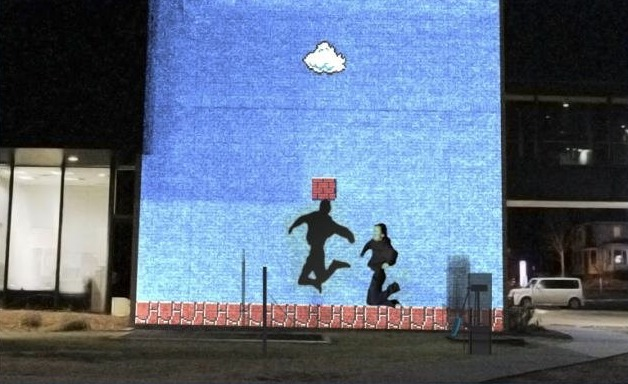

Midnight Mario
An interactive projection for Northern Spark 2012, Minneapolis's annual Nuit Blanche. A robotic arm turns a jump rope while you jump into a projected 8-bit Mario world, and your shadow breaks the coin brick.
- Event
- Northern Spark 2012, Minneapolis
- Artists
- Peng Wu, Matthew Szklarz
- My role
- Game programming, Kinect motion tracking
- Built with
- Xbox Kinect, projection, robotic arm

Jumpers' shadows in the projected Mario world, on the side of a building at MCAD.
The project
Midnight Mario was an interactive installation by Peng Wu and me, presented by MCAD's student-curated Gallery 148 at Northern Spark 2012, Minneapolis's all-night Nuit Blanche arts festival. It ran from dusk until dawn on the side of a building at the Minneapolis College of Art and Design.
It mixed a playground game with a video game. A robotic arm turned a jump rope, and as you jumped, your shadow appeared in a projected scene from the original Super Mario Bros. There were no monsters to fight and no princess to save. The only goal was to hit the brick and make gold coins rain down, and to keep jumping. Trip on the rope and your turn was over.
My part
I programmed the game and the motion tracking. An Xbox Kinect watched the jumper, and the game turned that into a shadow inside the 8-bit world, so every real jump became a jump on screen, and a good one broke the coin brick.
Clear the rope, and you're Mario's stunt double.